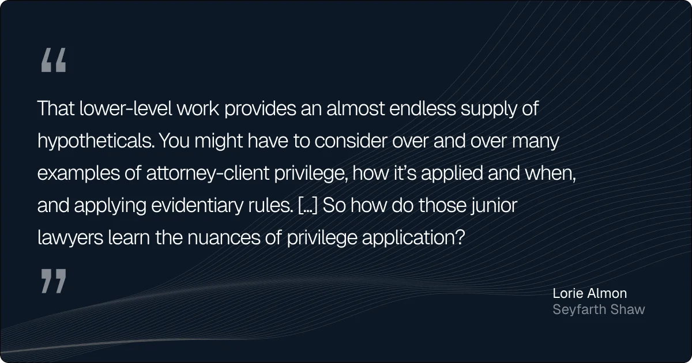

The risks of AI in law are the potential legal, ethical, operational, and business challenges that can arise when artificial intelligence is used in legal work.
This tension isn’t new.
Every major leap in legal tech, including billing software and e-discovery, drew the same accusation: Efficiency comes at the cost of rigor. However, artificial intelligence has caused a different level of apprehension.
AI is mostly seen as a disruptive force, and law sits near the top of the list of professions most exposed to it. Legal professionals can see the effects, too, with more than 40% of them reporting some degree of hesitancy, concern, or fear about AI’s role in their practice.
That caution is warranted, as there are at least eight risks legal teams need to understand before putting AI at the center of their operations. This article breaks down each one, along with strategies for reducing their impact.
Key takeaways
- AI can generate convincing but incorrect legal information
Hallucinations, fabricated citations, and unsupported conclusions remain the biggest risks of using AI in legal work. - Confidentiality and data protection require extra care
Entering sensitive information into AI tools can create privacy, security, and compliance issues if proper safeguards aren’t in place. - Speed doesn’t always mean quality
AI can draft, summarize, and review documents quickly, but it can still miss nuance, context, and strategic considerations. - Human oversight is the best risk management tool
Clear governance, AI literacy, and attorney review help ensure AI remains a tool rather than a source of legal liability. - The strongest model combines AI with legal expertise
AI-native law firms like General Legal use technology to handle repetitive work while experienced attorneys provide the judgment, accountability, and strategic advice clients actually need.
8 biggest risks of AI in law
With almost 70% of legal professionals using general-purpose generative AI tools and 42% relying on legal-specific AI solutions, the focus has shifted from whether to use AI to how to use it safely.
The eight risks below are some of the most important considerations to keep in mind as AI becomes a larger part of legal practice.
1. Inaccurate and fabricated outputs
According to a 2024 American Bar Association (ABA) survey, 75% of lawyers cite inaccurate output as the single biggest barrier to AI adoption in the legal profession.
Known as “hallucinations,” these errors generally appear in two forms:
- Incorrect outputs: The AI misstates the law, misinterprets a case, or gets the facts wrong.
- Misgrounded outputs: The AI reaches the right conclusion but cites sources that don’t actually support it.
Another 2024 study found that legal hallucinations were both pervasive and alarming, with rates ranging from 58% to 88% across tested general-purpose models.
Fast forward to 2026, and the issue has become significant enough to warrant its own tracking database. By mid-June 2026, the AI Hallucination Cases Database had logged 1,135 cases involving AI-fabricated citations or other hallucinated content in the US alone.
This risk extends well beyond first-time AI users. In one widely reported case, a Stanford professor known for studying misinformation appeared to include citations to non-existent papers in an expert declaration.
2. Data exposure and privacy violations
Among legal professionals who have yet to use AI, roughly 13% cite data security concerns as a reason for holding back. At the law firm level, the hesitation is far more pronounced, with 46% of firms identifying data security as a significant barrier to AI adoption.

Where does that concern come from?
AI systems often process large amounts of personal data, and many collect information about users as part of their operation. That raises questions about data storage, third-party access, regulatory compliance, and the proper handling of personal information.
3. Compromised client confidentiality
Client confidentiality is one of the cornerstones of legal practice, and any technology that puts it at risk deserves careful scrutiny.
Depending on the platform, information entered into an AI system may be stored, processed by third parties, or exposed through security vulnerabilities. In 2023, for example, ChatGPT disclosed a data breach that exposed user prompts and other personal information. Even so, 33% of legal professionals continue to trust it with sensitive client information.
However, the risk extends beyond data breaches.
Legal teams may inadvertently violate client agreements, NDAs, or internal policies by entering sensitive information into AI tools that haven’t been approved for confidential matters.
4. Copyright and ownership disputes
AI models are trained on vast amounts of online content, much of which may be protected by copyright. As a result, questions around ownership, attribution, and permissible use remain far from settled.
For legal teams, the risk doesn’t stop with the data used to train AI. The outputs themselves can create problems if they reproduce copyrighted material or draw from protected works without making the source apparent.
5. Low-quality outputs
Generative AI is now being used across nearly every major legal workflow, from document review and legal research to draft creation and client communications.
When a tool can review contracts, summarize transcripts, and produce a first draft in seconds, it’s easy to see why adoption isn’t slowing down. However, speed and quality don’t always align.
Even when AI outputs are factually accurate, they can miss nuance, overlook context, or fail to meet the standard expected in legal practice. That’s one reason why half of legal professionals who have yet to use AI question the quality and usefulness of the technology.
6. Biased outputs
AI models learn from human-generated data. That includes the good, the bad, and the biased.
AI systems can reproduce (or even amplify) existing patterns of discrimination while appearing neutral on the surface. For instance, a 2024 study found that large language models may provide less favorable advice based on names associated with racial minorities and women, even when all other facts remain the same.
Biased outputs can also expose legal teams and their clients to compliance, litigation, and reputational risk.
For example, a startup can automate key decisions with AI-assisted hiring, onboarding, moderating, or customer screening, but if bias makes its way into those workflows, regulators and plaintiffs won’t care that the decision came from an algorithm.
7. Job displacement and workforce disruption
Will AI replace lawyers?
It’s one of the first questions that comes up whenever AI enters the conversation, and it’s a concern that many legal professionals take seriously.
For now, the most visible impact is at the task level rather than the profession level. Document review, legal research, discovery analysis, and routine drafting are increasingly being automated, reducing the workload traditionally assigned to legal assistants, paralegals, and junior associates.
This doesn’t mean these roles will disappear overnight. However, it does mean that fewer people may be needed to perform the same work, particularly in areas built around repeatable, process-driven tasks.
8. Reduced training opportunities
Even if AI doesn’t fundamentally change hiring practices in the legal industry, it may still change how lawyers develop their skills.
Many of the tasks AI is increasingly handling have traditionally served as training grounds for junior lawyers. While this work can be repetitive, it also teaches issue spotting, legal reasoning, and the nuances that separate good lawyers from great ones.
As one legal industry expert put it, those tasks provide an “almost endless supply of hypotheticals” through which junior lawyers learn how to apply legal principles in practice.

When AI takes over more of that work, firms face a new challenge: finding alternative ways to develop judgment and expertise.
The same principle applies to every risk of AI in law. The goal shouldn’t be to avoid using this technology, but to put the right guardrails around it. So, how can legal teams capture the benefits of AI while managing the risks that come with it?
5 key strategies for managing the risks of AI in law
From regulators in the European Union to professional bodies like the ABA and law firms developing their own internal policies, there’s a growing consensus that AI’s risks need to be managed.
As a result, legal teams now have access to a growing body of regulations, ethical guidance, governance frameworks, and best practices designed to make AI adoption safer and more predictable.
Here are five of the most valuable strategies to start with:
1. Establish AI governance frameworks
AI governance is rapidly moving from a best practice to an expectation.
The EU AI Act introduced the world’s first comprehensive AI framework, while in the US, individual states have adopted rules around transparency, accountability, and discrimination.
At the professional level, the ABA’s duty of technological competence requires lawyers to understand both the benefits and risks associated with emerging technologies. For many lawyers, professional standards enforced by the bar remain one of the strongest protections against both irresponsible AI use and the devaluation of legal expertise.
The same thinking applies inside law firms. Strong governance starts with:
- Documented AI policies
- Approved use cases
- Staff training
- Review procedures
- Clear accountability for AI-assisted work
Some firms have already formalized these safeguards. A&O Shearman, for example, requires lawyers using Harvey AI to review the platform’s rules and limitations each time they log in.
As for individual practitioners, no policy can replace professional responsibility. Lawyers remain responsible for understanding the tools they use and the risks that come with them.

2. Protect client and firm data
When it comes to AI, data protection is a matter of process.
Legal teams should:
- Vet AI vendors before adoption, including their security controls, data retention practices, and customer information policies
- Create internal rules for AI use, including what information can and can’t be entered into AI systems
- Use approved enterprise tools rather than personal or consumer accounts whenever possible
- Limit access to sensitive information based on role and business need
- Train employees regularly on data protection, privacy, and cybersecurity obligations
These safeguards won’t eliminate every risk, but they can significantly reduce the chances of a preventable mistake becoming a legal problem.
3. Bring clients into the conversation
Many legal teams still treat AI as an internal issue, but their clients often don’t.
According to recent research, 59% of corporate legal clients and 44% of government legal clients want their outside counsel to use generative AI. At the same time, some clients are increasingly using AI themselves; some are pasting legal advice into ChatGPT to generate summaries before a board meeting, while others arrive with AI-generated drafts, research, or analyses already in hand.
However, as open-minded as clients may be toward AI-assisted legal work, that openness works best when expectations are discussed upfront. That’s why legal teams should:
- Address AI use in engagement letters and outside counsel agreements
- Explain how AI is used, including the level of human review applied to AI-assisted work
- Discuss confidentiality and privilege risks with clients before they become a problem
- Set expectations around how legal advice, contracts, and other work product should be handled after delivery
- Review client-imposed AI restrictions before adopting new tools or workflows
4. Invest in AI literacy
Two firms can have access to the same AI tools and get completely different results. The difference often comes down to whether lawyers understand the technology well enough to use it effectively, supervise it appropriately, and recognize when something goes wrong.
The table below outlines some of the core AI competencies modern legal teams should be developing:
5. Make lawyers the final decision-makers
Nearly all legal professionals agree on one point: AI should assist lawyers, not replace them. That’s part of the reason why as many as 83% of them oppose the idea of AI providing legal advice on its own.
In commercial law, for example, AI can review contracts, identify unusual clauses, summarize due diligence findings, and generate first drafts in seconds. What it can’t do is understand the commercial reality behind a transaction, navigate competing stakeholder interests, negotiate a compromise, or advise a client on how much risk is actually worth taking.
The same applies in other areas of the profession. Clients don’t hire lawyers just to retrieve information. They hire them to exercise judgment, ask better questions, spot what isn’t being said, and make decisions when the answer isn’t obvious.
History offers a useful parallel. When ATMs were introduced, many assumed bank tellers would disappear. Instead, routine transactions became automated while human employees shifted toward higher-value work that required trust, communication, and judgment.
AI is likely to follow a similar path.
As powerful as these systems are becoming, there will always be a need for the human factor—for knowing what questions to ask, how to interpret the answers, and when to challenge them. At the same time, another idea keeps resurfacing in conversations about the future of legal work: AI won’t replace lawyers, but lawyers who know how to use AI will have an advantage over those who don’t.
So, the future of legal services is unlikely to be AI alone or lawyers alone. Increasingly, the focus is shifting toward combining the strengths of both.
Why the future of law is AI-native
Using AI and being AI-native aren’t the same thing.
Many law firms have started experimenting with AI tools, often by giving individual lawyers access to platforms like ChatGPT, Claude, or legal-specific AI products. That approach has value, but it doesn’t fundamentally change how legal services are delivered.
A lawyer equipped with AI remains limited by their personal expertise. A commercial contracts specialist can only review commercial contracts, while an employment lawyer can only advise on employment matters. The technology may accelerate the work, but it doesn’t expand the breadth of expertise available to a client.
AI-native law firms take a different approach.
Instead of layering AI onto traditional workflows, they build attorney workflows around AI from the beginning. The technology handles the repetitive work it’s best at—reviewing documents, identifying issues, surfacing risks, and generating first drafts—while attorneys focus on strategy, negotiation, judgment, and client advice.
At General Legal, that model relies on teams of experienced attorneys across multiple practice areas, like employment and data privacy, working alongside AI systems designed specifically for legal work. Every matter benefits from both technological efficiency and specialized legal expertise.
Just as importantly, the model helps address many of the risks of AI in law by upholding three key principles:
- AI-generated outputs are reviewed by attorneys before reaching clients.
- Legal judgment remains firmly in human hands.
- Governance, confidentiality, and quality control are built directly into the workflow rather than treated as afterthoughts.
The result is a service model that captures the strengths of both: the speed of AI and the quality of human legal expertise.
If you’re ready to see what the future of legal services looks like, create a free account, send us a contract, and discover how an AI-native law firm operates. For everything else, our attorneys are just an email away.
FAQ
Are law jobs at risk from AI?
Yes, particularly roles focused on repetitive tasks like document review, legal research, and routine drafting. However, AI is currently changing how legal work is performed rather than eliminating lawyers altogether.
How is law being affected by AI?
AI is helping legal professionals automate tasks like contract review, document summarization, legal research, and drafting, allowing legal work to be completed faster and often at a lower cost.